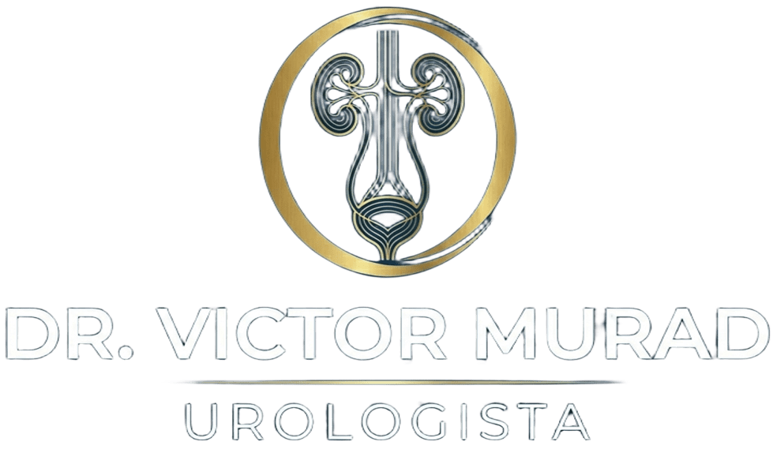
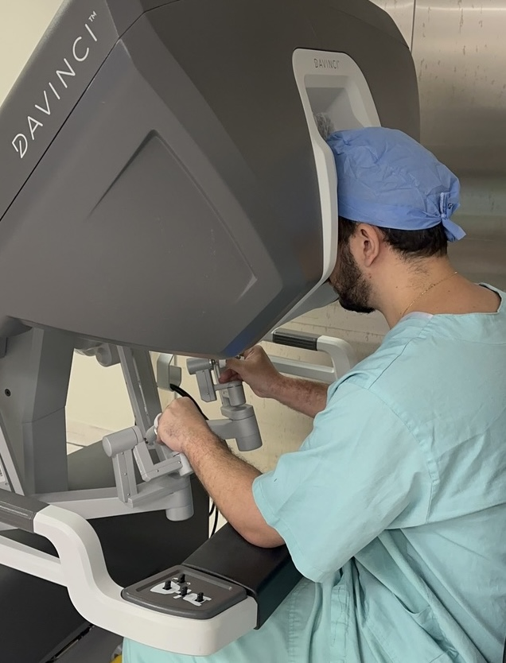
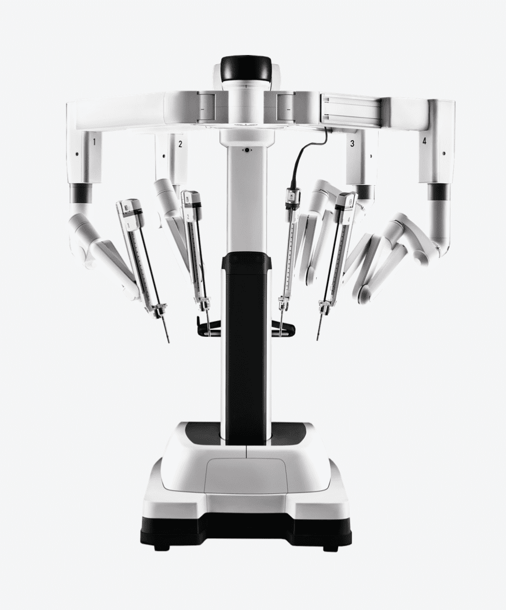

Urologista em São Paulo-SP
Dr. Victor Murad é referência na avaliação, diagnóstico e tratamento das doenças urológicas, com foco em Uro-Oncologia e Cirurgia Robótica.
Atendimento Presencial
Telemedicina
Áreas de Atuação
Cálculos Urinários
(Pedra nos Rins)
Diagnóstico e tratamento de pedras nos rins e ureter, com técnicas modernas e menos invasivas.
Laser Minimamente invasivoPróstata Aumentada
(HPB)
Tratamento do aumento benigno da próstata, melhorando o fluxo urinário e os sintomas.
RTU HoLEP Cirurgia robóticaCâncer de Próstata
Avaliação, diagnóstico precoce e tratamento individualizado.
Prostatectomia radical Ultra preservadora Tratamento personalizadoCâncer de Rim e Bexiga
Abordagem completa com foco em diagnóstico preciso e tratamento eficaz.
Cirurgia Seguimento PrevençãoCirurgia Robótica
Procedimentos modernos com maior precisão, menor dor e recuperação mais rápida.
Alta precisão Recuperação rápida Tecnologia avançadaPequenas Cirurgias
Vasectomia, postectomia (fimose), cauterização e biópsia de lesões.
Ambulatorial Rápido SeguroExames Urológicos
Cistoscopia, Estudo Urodinâmico, Biópsia de próstata.
Diagnóstico PrecisãoCheck-up Urológico
Avaliação preventiva completa da saúde urológica do homem e da mulher.
Prevenção PSA Rotina anual
CRM-SP 285969 | RQE 149386
Dr. Victor Murad
Formação de excelência
> Certificação em Cirurgia Robótica - Plataforma Da Vinci
> Residência Médica em Urologia - Universidade de Brasília (UnB)
> Residência Médica em Cirurgia Geral - Universidade de Brasília (UnB)
> Médico pelo Centro Universitário do Planalto Central, Brasília-DF
Como funciona a Cirurgia Robótica
A cirurgia robótica representa uma das maiores evoluções da medicina moderna, permitindo procedimentos mais precisos, seguros e com recuperação mais rápida.
Utilizando plataformas avançadas como o Da Vinci, o cirurgião controla braços robóticos com altíssima precisão, filtrando tremores e ampliando os movimentos humanos.
A visão é tridimensional e ampliada, proporcionando um nível de detalhe muito superior à cirurgia convencional, o que permite maior preservação de estruturas importantes.
Para o paciente, isso se traduz em menor dor, menos sangramento, menor tempo de internação e retorno mais rápido às atividades do dia a dia.


Perguntas Frequentes
O check-up é recomendado regularmente a partir dos 50 anos, ou antes se houver histórico familiar. No entanto, qualquer sintoma urinário ou alteração deve ser avaliado em qualquer idade.
Não. Você pode agendar diretamente sua consulta, com avaliação completa e individualizada.
A avaliação preventiva é indicada a partir dos 50 anos, ou aos 45 em casos com histórico familiar. No entanto, sintomas urinários devem sempre ser investigados, independentemente da idade.
Homens e mulheres devem procurar um urologista em caso de dor ao urinar, sangue na urina, infecções urinárias recorrentes, dificuldade para urinar, incontinência ou alterações na função sexual.
Não. Muitas pedras pequenas podem ser eliminadas naturalmente. Casos maiores, com dor intensa ou complicações podem exigir tratamento com laser ou cirurgia minimamente invasiva.
Sim. A telemedicina permite avaliação inicial, orientação e acompanhamento com segurança. Quando necessário, o atendimento presencial é indicado.